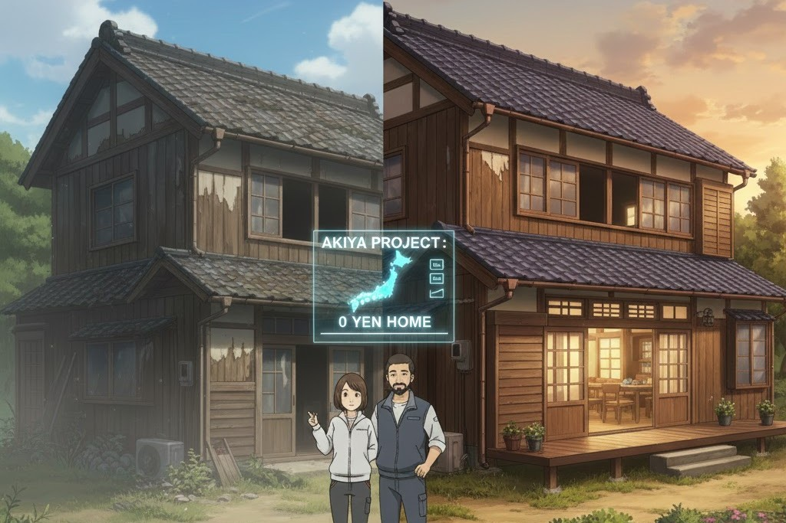
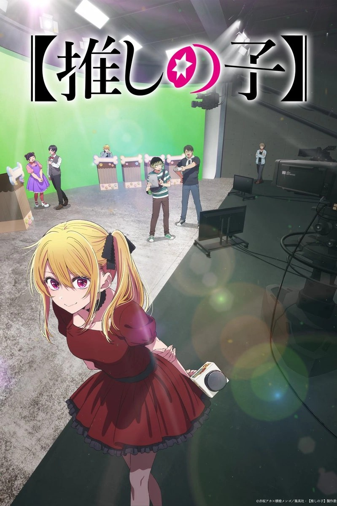
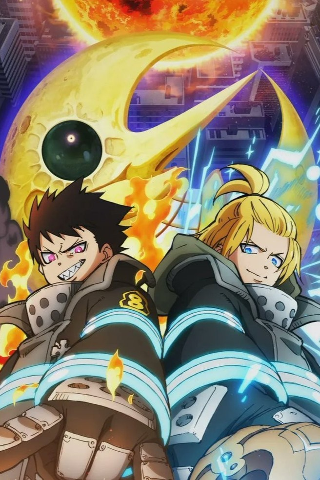
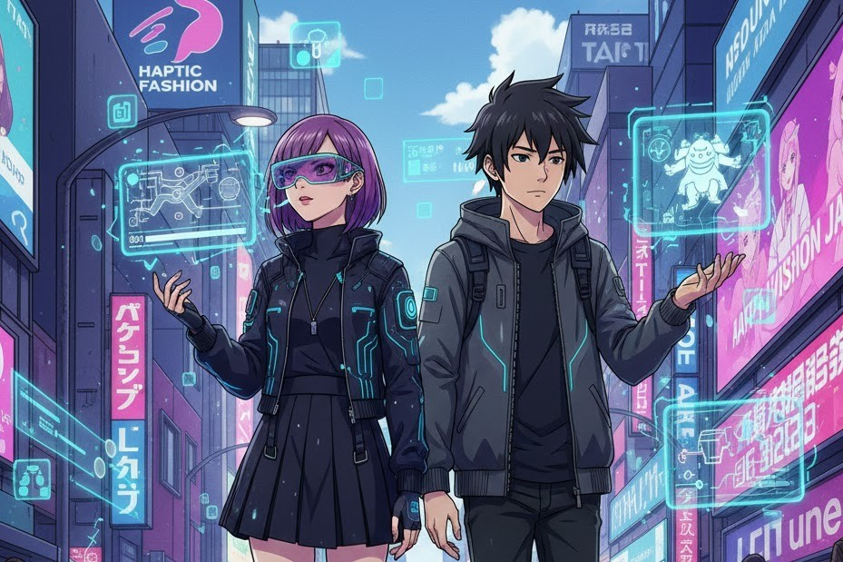
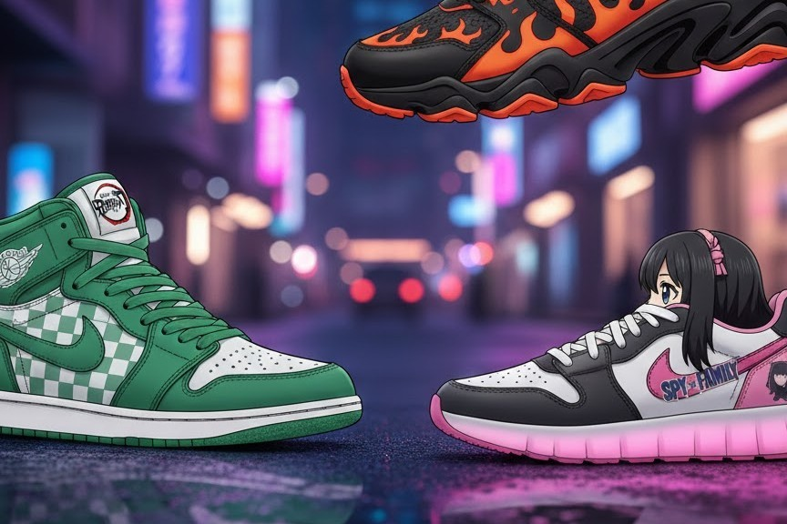
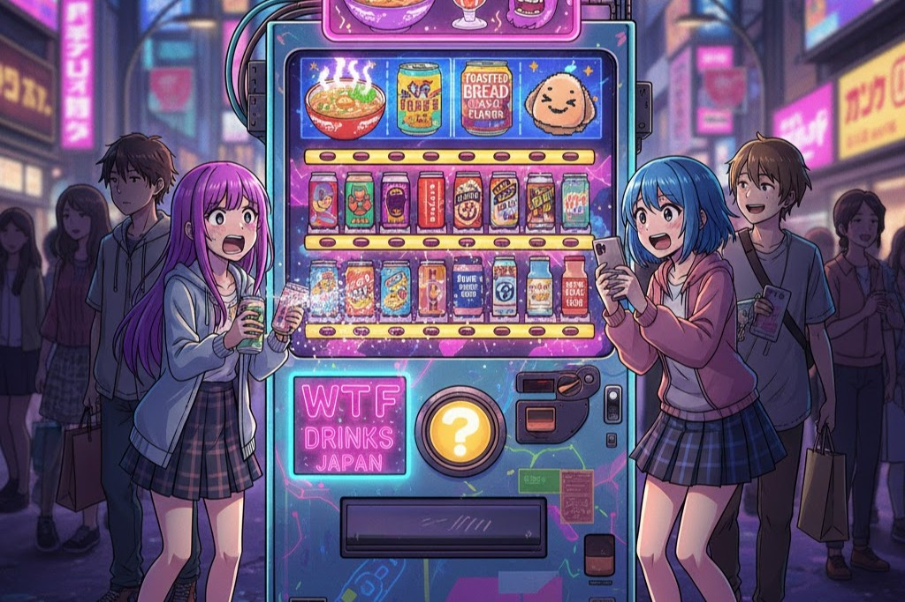
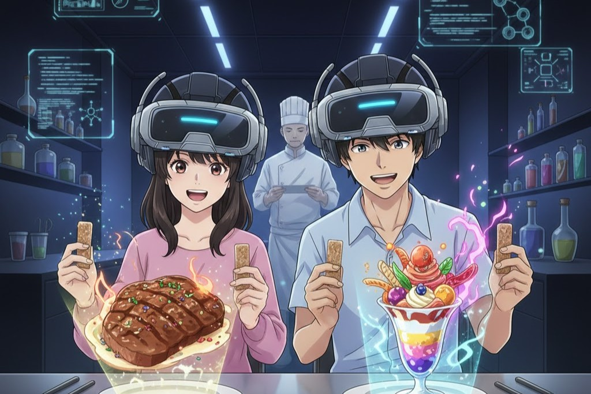

LATINOAMÉRICA OTAKU
ラテンアメリカのオタク


CULTURA JAPONESA
日本文化
Tecnología y Tradición: El primer Sakura Forecast con IA Cuántica

Matsuri: la explosión de cultura, tradición y color en Japón
El Desafío de los "Akiya": Casas gratis para revitalizar el Japón rural
El Resurgimiento de los "Kissaten": La Generación Z abraza lo Retro
PODCASTS
ポッドキャスト
OTAKUS & COMUNIDAD
オタクとコミュニティ


MANGA & ANIME
漫画とアニメ

Fathers Of La Patria: el primer anime uruguayo
Oshi no Ko Temporada 3: El escenario está listo para el regreso del fenómeno Idol
Fire Force Temporada 3, Parte 2: El épico final de la Brigada 8 comienza este enero
Fathers Of La Patria: el primer anime uruguayo
Oshi no Ko Temporada 3: El escenario está listo para el regreso del fenómeno Idol
GAMING, TECH & MODA
オタクとコミュニティ
El Imperio de los "VTubers Esports": Avatares Virtuales y la Nueva Frontera del Entretenimiento

Top 5 juegos móbiles: los vas a querer todos
Wearable Tech "Gamer": La Ropa Inteligente y la Fusión de Espacios Urbanos
Sneakers de Alta Costura Anime: El Motor del Lujo y el Coleccionismo en 2026
ZONA WTF
ゾーン WTF
Mazmorras Reales: El Parque Temático Subterráneo y el Límite del Juego de Rol
Ruleta Rusa de Sabores: El auge de las "Máquinas Misteriosas" y la Gamificación del Consumo

¿Fué Astroboy el primer anime de la historia? En Animetrics respondimos la pregunta
Gastronomía Ilusoria: El Restaurante de Realidad Aumentada que Engaña a tus Sentidos
xxx para adultos
大人のためのxxx


 Regresar
Regresar